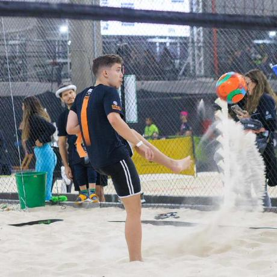

Dados Pessoais
Nome: João Vicente da Rosa da Silveira
E-mail: joaorovera73@gmail.com
Telefone: (48) 988131120
Nome: João Vicente da Rosa da Silveira
E-mail: joaorovera73@gmail.com
Telefone: (48) 988131120
Cargo: Estágiário na secretaria academica
Empresa: UNIASSELVI - FADESC
Descrição: Algumas responsabilades da minha função eram a organização de planilhas, atendimento ao cliente
seja presencial, telefone ou wpp, organização do estoque e abertura de protocolos.
Curso: Ensino Médio Técnico Integrado
Instituição: IFSC - São José
Ano de Conclusão: 2022
Curso: Pacote Office Básico
Horas: 60h
Instituição: FATENP
---------------------------------------------------------------------
Curso: Designer Gráfico
Horas: 60h
Instituição: EPIC school
LinkedIn: linkedin.com/joaoVicente
Instagram: Instagram.com/joaoVicente